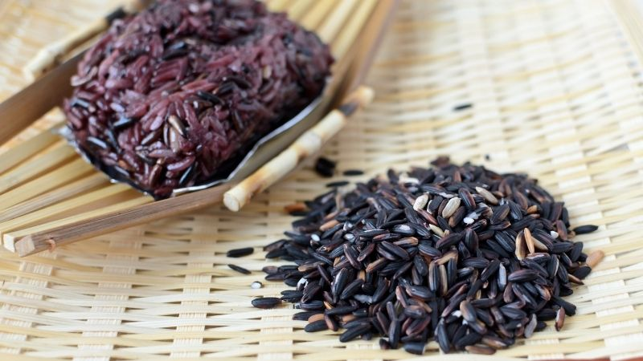

Nếp Cẩm là loại gạo nếp có màu tím đen tự nhiên, giàu dinh dưỡng và thường được sử dụng để nấu xôi, chè, hoặc làm rượu nếp cẩm. Đây là một loại thực phẩm bổ dưỡng, tốt cho sức khỏe và được ưa chuộng trong ẩm thực Việt Nam.
45,000đ / kg